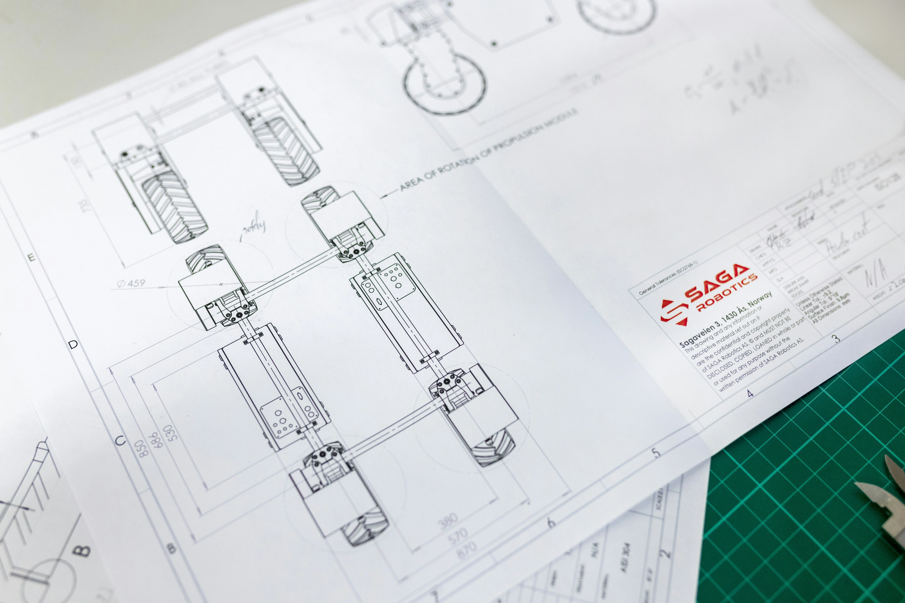
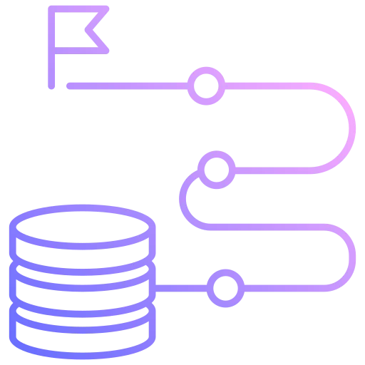
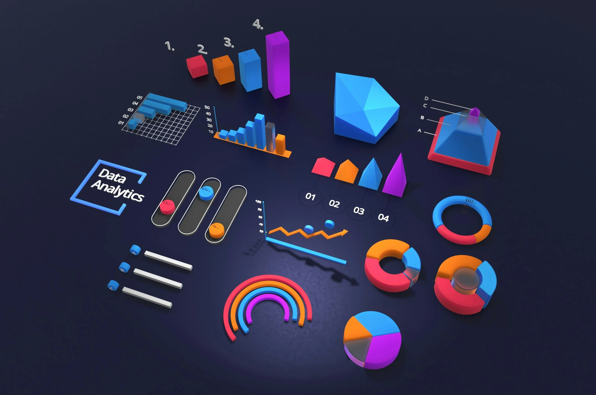
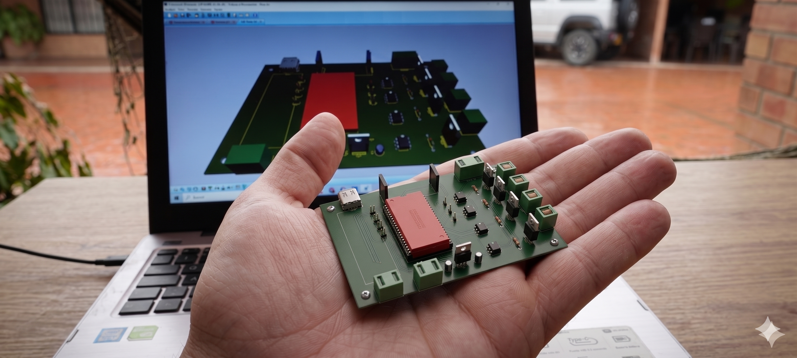

Sobre mí

Soy ingeniero mecatrónico con la capacidad de abordar problemas complejos de ingeniería, analizarlos en profundidad y transformarlos en soluciones aplicables a proyectos reales. Disfruto el proceso de aprendizaje continuo y la construcción práctica como forma de consolidar el conocimiento. A lo largo de mi proceso, he desarrollado diferentes proyectos que integran diseño, electrónica y programación. Actualmente, mi enfoque está en dar el siguiente paso: convertir estas ideas en soluciones con valor real, orientadas a generar impacto y sostenibilidad. Por ello, estoy en la búsqueda de especializarme en un área específica que me permita profundizar, consolidar experiencia y desarrollar proyectos con un enfoque más estratégico y productivo.
PROYECTOS

GitHub: cuenta de proyectos
Visualización de los repositorios publicados en GitHub de los proyectos que están en curso. (Python, SQL, Power BI)
Ver repositorios
Proyecto de diseño 3D (CAD)
Proyecto CAD 3D desarrollado en Solid Edge que incluye el modelado completo de un ensamble mecánico. El proyecto cuenta con planos de cada pieza, el general y explosionado.
Ver explosionado
Proyecto Pipeline ETL
Pipeline ETL (Extracción, Transformación, Carga) de datos para clientes y ventas, con limpieza, transformación y visualización en dashboard.
Detalles del proyectoPágina web Portafolio
Creación de página web tipo portafolio para mostrar proyectos y habilidades, desarrollando destrezas en edición de HTML, CSS y JavaScript.
Visualización del código
Dashboard de mantenimiento predictivo (en proceso)
Monitoreo simulado de un motor industrial en tiempo real con soporte de Inteligencia Artificial para predecir fallas.
Explorar concepto
Diseño de circuitos electrónicos
Diseño de circuitos electrónicos por fases, con creación de modelos 3D para el desarrollo de productos.
Observar diseñoSKILLS / HABILIDADES
CERTIFICACIONES
Certificado en Análisis de Datos
Certificado en Python
Certificado en Power BI
Certificado Excel
Certificado SQL
Certificado IoT
Certificado SCRUM
Certificado Fundamentos ChatGPT
Otras certificaciones (por agregar)
EXPERIENCIA
Business Analyst (Programa MINTIC) | Instituto Triángulo | Sep 2024 - Nov 2025
- Desarrollé visualizaciones interactivas en Power BI para presentar métricas operativas y KPI clave, incrementando la eficiencia en la toma de decisiones.
- Realicé consultas y transformación de datos en SQL y DAX para la construcción de reportes y dashboards ejecutivos.
- Ejecuté procesos ETL para consolidar información proveniente de múltiples fuentes, mejorando la calidad y consistencia de los datasets.
- Apliqué análisis exploratorio y estadístico con Python y R para identificar patrones, detectar anomalías y recomendar acciones estratégicas.
- Documenté procesos analíticos y presenté hallazgos a audiencias técnicas y no técnicas, fortaleciendo la comunicación de resultados y la gestión basada en datos.
Ingeniero Mecatrónico | Ingennova SAS (2024-2025)
- Programación de microcontroladores STM usados en telemetría (IoT).
- Soldadura de placas PCB.